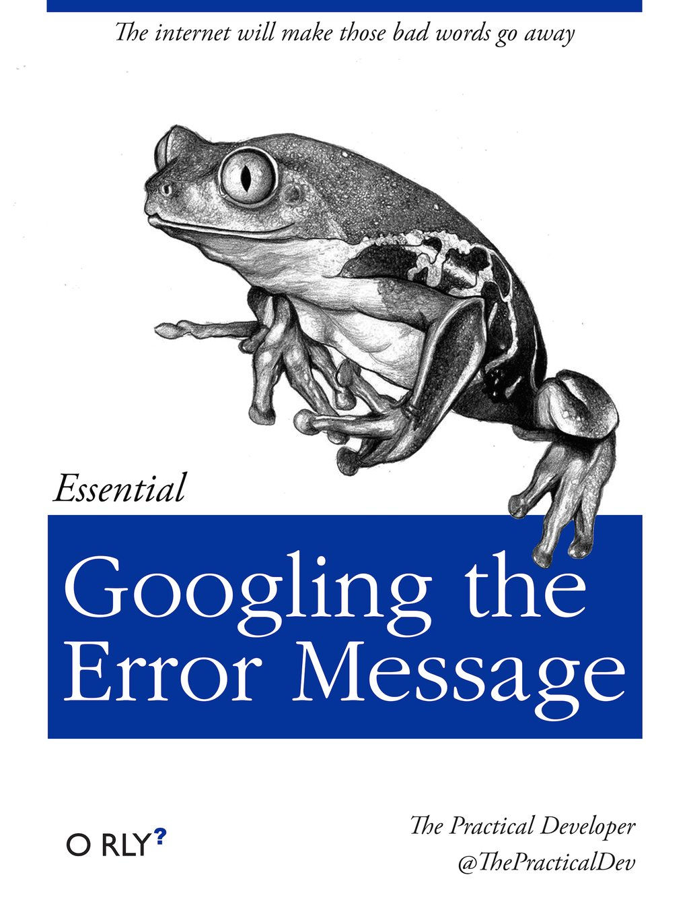
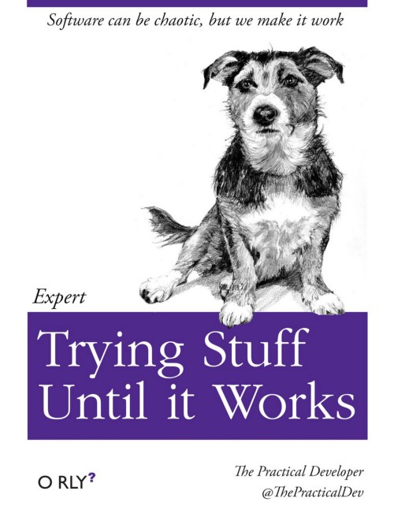
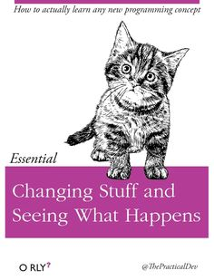

You will all have to give a presentation at some point - make sure you start it right: “How to start a speech”
You will inevitably run into problems; things won’t work the way you expect, and you’ll get lots of confusing error messages. When this happens, many turn to the following tried and true problem-solving approaches:
  